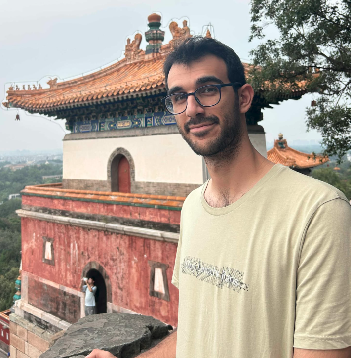

MSR Student @ CMU | Former Senior Autopilot Software Engineer @ Tesla
CV | Google Scholar | GitHub
Hi! I am Ares Koumblis (Greek: Άρης Κουμπλής), an M.S. Robotics student at Carnegie Mellon University, where I research multimodal embodied agents under Prof. Katerina Fragkiadaki. I hold a BE/ME in Electrical and Computer Engineering from the National Technical University of Athens, with a concentration in Computer Science. While at NTUA, I founded and led the Formula Student (FSAE) autonomous driving team within PROM Racing NTUA. My thesis focused on the autonomous driving pipeline deployed on the team's first driverless race car, advised by Prof. Constantinos Tzafestas.
Before CMU, I spent two and a half years on Tesla Autopilot, growing from software QA to Senior Software Development Engineer. I worked on feature validation, model evaluation in open-loop, closed-loop, and video-generation simulation, software integration, explicit motion planning, and RL fine-tuning of driving policies for reduced-visibility conditions. My experience spans the development of a camera-only autonomous stack for an FSAE race car to training, evaluating, and deploying learning-based autonomy at production scale.
These experiences have shaped my interest in scalable robot learning and general-purpose embodied agents. My current research focuses on post-training multimodal models for embodied reasoning: distilling multi-step, tool-calling reasoning from 2D VLMs into 3D VLMs that actively inspect point clouds, imitation learning and reinforcement learning post-training of policies for long-horizon embodied navigation, and learned memory management, where the agent decides what to write, retrieve, and fold out of its context. More broadly, I am interested in building learning-based systems that can combine perception, reasoning, memory, and action to generalize across tasks and operate reliably in the real world.
The full autonomous driving software of P23, PROM Racing NTUA's first driverless car: GitHub link
Koumplis, Aris. "Contribution to the Design and Implementation of an Autonomous Driving System for a Formula Student Driverless Car." (2024).